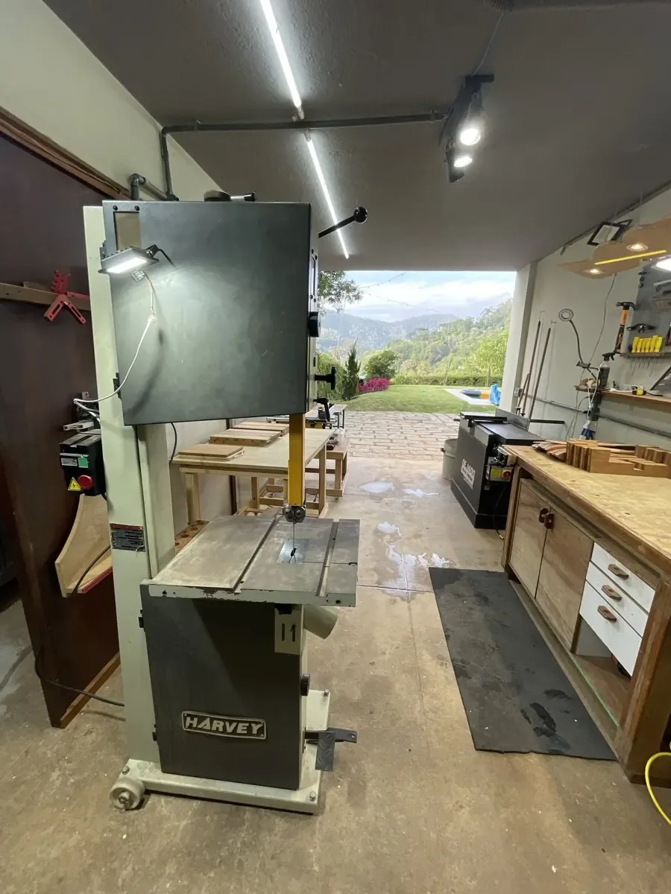
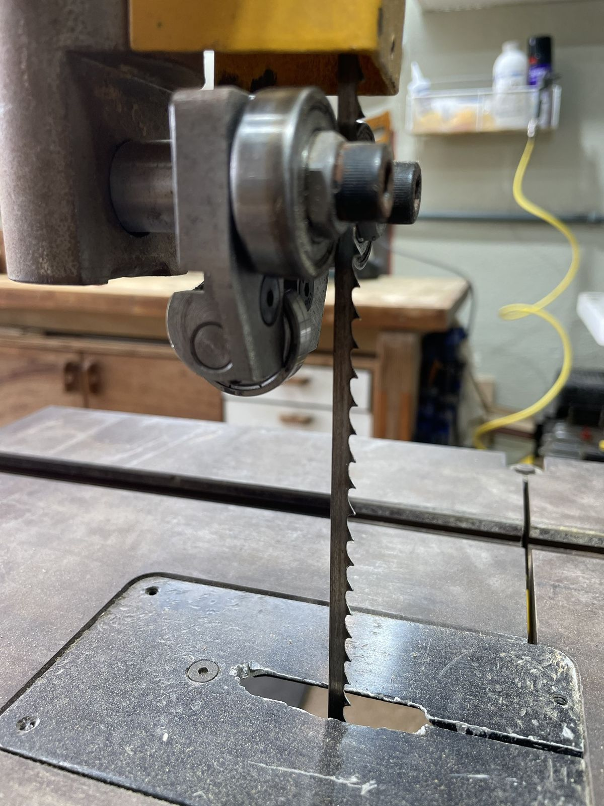
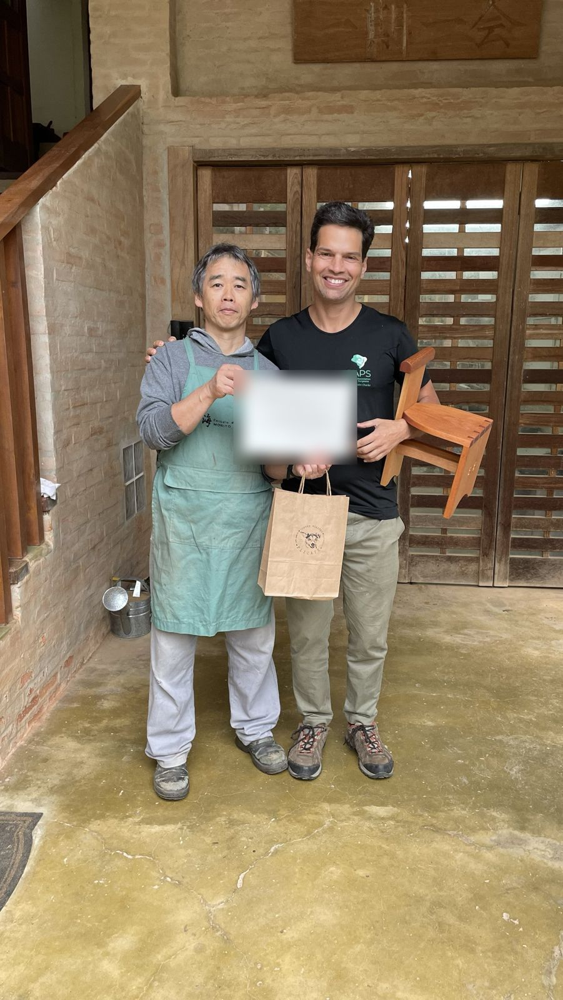

Galeria
A oficina, as ferramentas e algumas peças. Toque numa foto para abrir o artigo relacionado.

A oficina vista do fundo A bancada, primeira decisão da oficina
A bancada, primeira decisão da oficina Entrada: serra de bancada e apoios
Entrada: serra de bancada e apoios Mesa móvel para colagem
Mesa móvel para colagem Guias de rolamento da serra de fita
Guias de rolamento da serra de fita O conserto da tábua da madeira albina
O conserto da tábua da madeira albina
Lâmina, guias e mesa
Fim do curso no ateliê de Morito Ebine, com o banquinho feito em aula A lingueta de caixeta revelada
A lingueta de caixeta revelada Rolamento lateral e rolamento de encosto
Rolamento lateral e rolamento de encosto Broca chata de 35 mm
Broca chata de 35 mm